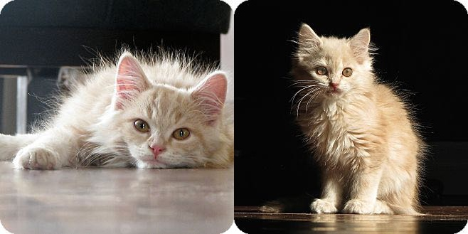
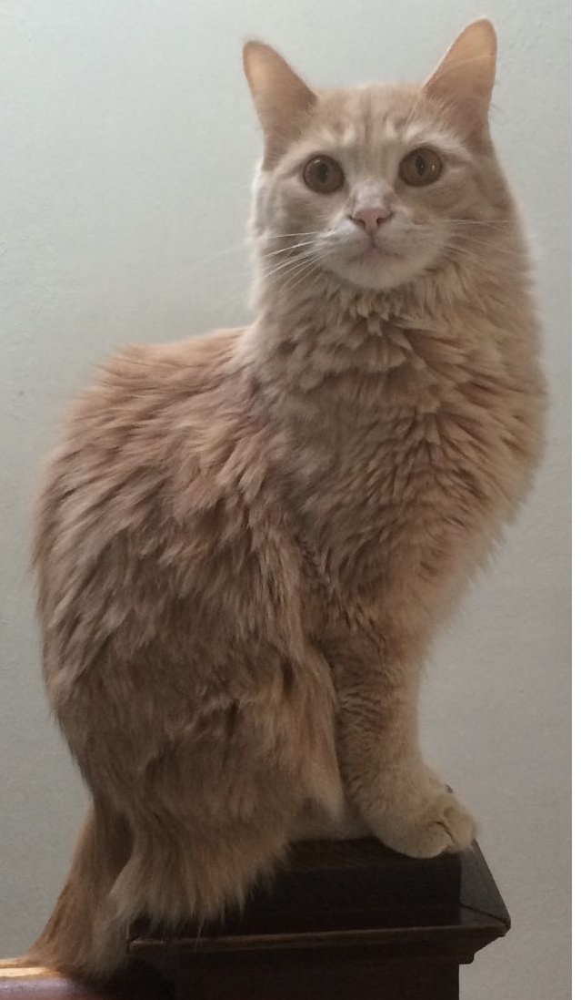
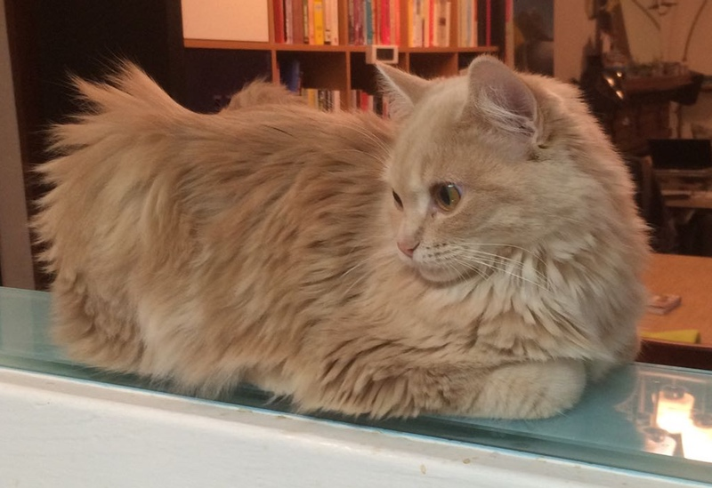

2014: Ups and Downs (more Downs than Usual)
I can’t say 2014 was one of my best years ever. I tried to travel, and failed; the house ate all our money; my mom got sick. On the other hand, my mom got better (and we discovered how much fun it is when I visit her without the kids), and we got kittens.
Turned Away
In March and April I was meant to go to San Francisco for work things. I was to be there for two weeks, with a week back home in between. (The two events were unrelated -- it was pure coincidence that they were so close together and both in San Francisco.)
Both times I was turned back at the US border, the first time on the grounds that I would be working in the US without a proper visa and “taking work away from an American citizen”, and the second time on the grounds that I was obviously trying it again. This is absurd, of course, because at the time the work I was doing, from my home in Toronto, was all work that could have been done by an American: sending email, selling event tickets, setting up websites. Basically anyone who does computer-based work for a US company anywhere in the world is stealing work from the hands of an American. The rules are anachronistic and ridiculous, but that didn’t stop the border control staff from calling me a liar and sending me home, with visible pleasure and mockery, two weeks in a row.
Adding insult to injury, everyone I told about my experience replied with pithy post hoc advice like, “Oh, I just say I’m going to meetings,” or “I say I’m visiting friends from college.” Apparently I am the only person dumb enough to be honest at border control.
So now I may or may not have a black mark on my file; there is no way to know apart from trying to get into the US again, which I’m not going to do. I’m sad that I won’t be able to go to New York or Chicago or Boston or Portland again, and I’d love to go to New Orleans or San Francisco. But it’s just not worth the risk of paying for a trip I can’t go on, and of being bullied and harrassed by thick-necked extras from a Phil Zimbardo experiment.
Kitty Kitties

Our old cat Thomas died in November 2013, and by February of last year the house was starting to feel very quiet and empty. We were ready for new cats. I learned that, like tomatoes, cats have a season: apparently there is a kitten rush in spring, sometime around April. In February, April seemed a long way away, so I started checking the cat rescue and humane society websites anyway. It wasn’t long before we all fell in love with Peaches and Prince, two gorgeous balls of champagne-coloured fluff who were being fostered for Toronto Cat Rescue.

I called TCR to see about adopting them, but the lady who answered the phone put me off right away when she heard that we don’t have a car. The kittens were being fostered near Kitchener, and without a way for us to pick them up the agency wasn’t interested in moving forward. “We will have lots of cats in your neighbourhood in a few weeks,” she said.
Okay.
I guess.
I wanted to let it go but... they were so sweet!
I have a friend who fosters for TCR, and I asked her, ever so casually, if Peaches and Prince were her fosters. She said they weren’t but she knew the foster mom, and from there things just fell into place. My friend pursuaded the foster mom to drive the kittens to Toronto (!) and soon they were ours.
We renamed them Fern and Elijah, and they are a source of unceasing amusement, annoyance, and affection. Elijah has grown handsome and bold, and Fern is a slightly larger version of the fluffy kitten she was when she arrived.

The Money Pit
Last year we replaced half the roof, waterproofed the basement, replaced the furnace, and replaced a drain just outside the house. The roof was an emergency, the drain was an emergency, we did the basement because the timing was expedient (our neighbour was doing hers and we got a better price to do them together (because our houses are so close together they only needed to dig one trench!)) and the furnace was 24 years old and sputtered threateningly last winter.
It’s nice to have a house that’s a little warmer and more watertight than it was before (except where it shouldn’t be watertight, like in the drains) but I do wish it didn’t all have to happen in one year. I hope next year (and maybe the one after) are a little less exciting, home-improvement-wise. We can put some effort into improving our line of credit, instead.
Comments
Comments powered by Disqus